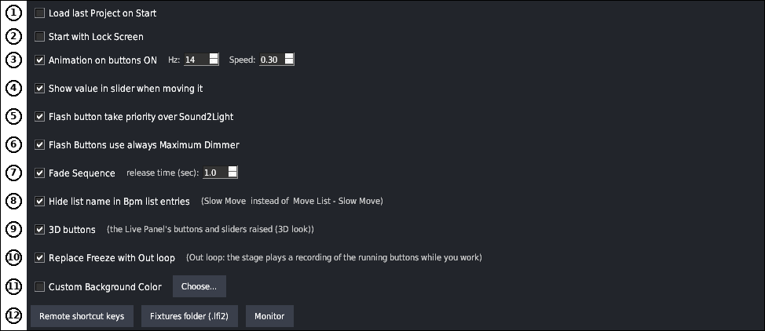
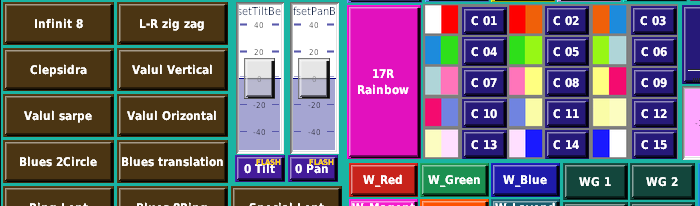

For: FullPlayer
The options of the program. They are kept as soon as they are changed, in the settings of the program - not in the project - so they are the same for every project. Options > Option in the quick bar, at the top of the window, opens this tab too.

The Option tab (Replace Freeze with Out loop ticked here; it is off when the program is new).
| 1 | Load last Project on Start - the program opens the project that was open last. Off at first: the program starts empty. |
| 2 | Start with Lock Screen - the program starts as after Lock Live-panel: only the Live panel and its pages, on the whole screen, ready for the show; Esc brings the rest back. Off at first. |
| 3 | Animation on buttons ON - the moving dots around the buttons that run or are held. Hz (1 to 60): how many times a second they are drawn; Speed (0.05 to 2.0): how many turns around the button they make in a second. On at first, 14 Hz, speed 0.30. Fewer Hz ask less of a slow computer. |
| 4 | Show value in slider when moving it - while a slider of the Live panel is moved, its value is shown on it (it goes 2 seconds after the last move). On at first. |
| 5 | Flash button take priority over Sound2Light - while a Flash button is held (with the mouse, a key or MIDI), Sound2Light does not react to the music; it goes on when the button is let go. So a flash is not mixed with steps made by the beat. On at first. |
| 6 | Flash Buttons use always Maximum Dimmer - the channels of a held Flash button go out at their full value, whatever the master sliders say. Off: they follow the masters as everything else. On at first. |
| 7 | Fade Sequence and release time (sec) - a button of the Live panel that has its own Fade Sequence ticked (in its Live-Object Propertys) goes down in this time when it stops, however it stops: its own click, a Flash let go, a key, MIDI, a macro, its last step. What it held goes down to 0, or over to the button running under it. From 0.1 to 10 seconds; 1 at first. Unticked: every button stops at once. |
| 8 | Hide list name in Bpm list entries - the copies of the BPM lists of Sound2Light are shown with their own name only: Slow Move, not Move List - Slow Move - in the lists of the Sound2Light tab, in the Bpm Lists window and in the Library, where the BPM List folder then has a folder for every list (and (no list) for the copies that are in no list now). Only what is shown changes: the names in the project stay as they are, and a rename in the Library shows the whole name. On at first. Unticked: everything as before. See BPM lists. |
| 9 | 3D buttons - the buttons of the Live panel (and of
Design Live-Panel) look raised: a light line at the top and the left and a darker shadow at the bottom and the
right, drawn inside the button. A running button keeps the same look, with its white outline and its dots. The
face, the text, FLASH / STEP / FADE and the gaps between the buttons stay as they are. The sliders get the same
look: the frame sunken (darker at the top and the left) and the handle raised, still see-through, so the scale
and the name are seen under it; the sliders' size and place do not change. On at first; untick it for flat
buttons and sliders. Kept in the program's settings (all the projects).  |
| 10 | Replace Freeze with Out loop - on the function bar, Freeze becomes Out loop: the interfaces play a recording of the running buttons while you work in the program. Off at first. Kept in the program's settings (all the projects). See Out loop. |
| 11 | Custom Background Color - the background of the Live panel in a colour of your own; Choose... picks it (and ticks the box). Unticked: the usual dark background. |
| 12 | The three buttons (below). |
| Button | What it opens |
|---|---|
| Remote shortcut keys | The keys and the MIDI of the remote player: Back, Play, Forward. The right click on those three buttons opens the same window. See Remote, controllers and MIDI. |
| Fixtures folder (.lfi2) | Chooses the folder of the fixture profiles, when they are not with the project. The program reads the profiles of the open project from there at once and says for how many fixtures, or which profiles it still did not find. Until the program is closed, the projects opened after it look in that folder first, then next to the project, the folder above it and ScanLib in the program's folder. See The program folder and its files. |
| Monitor | The settings of the Monitor window: its sliders, the Dimmer BPM, the time code, the DMX Visualizer, the move controls. See Mixer & Live. |
Note: the profiles tell the program which channel of a fixture is the dimmer, the pan, the tilt and so on. Without them the General Mixer, Invert Pan / Invert Tilt and the tools that look for those channels cannot work for that fixture.